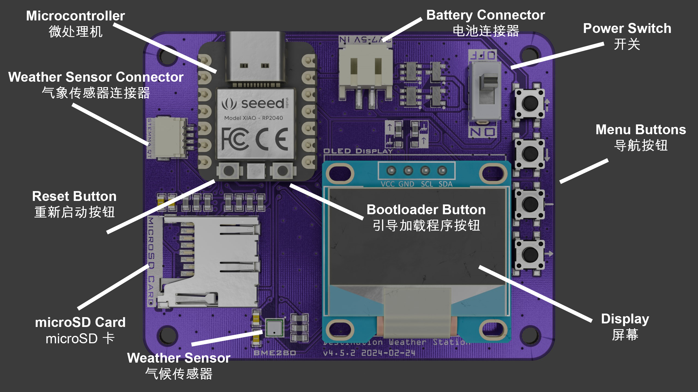
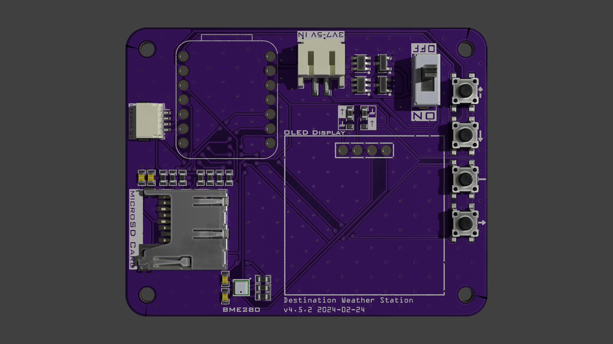
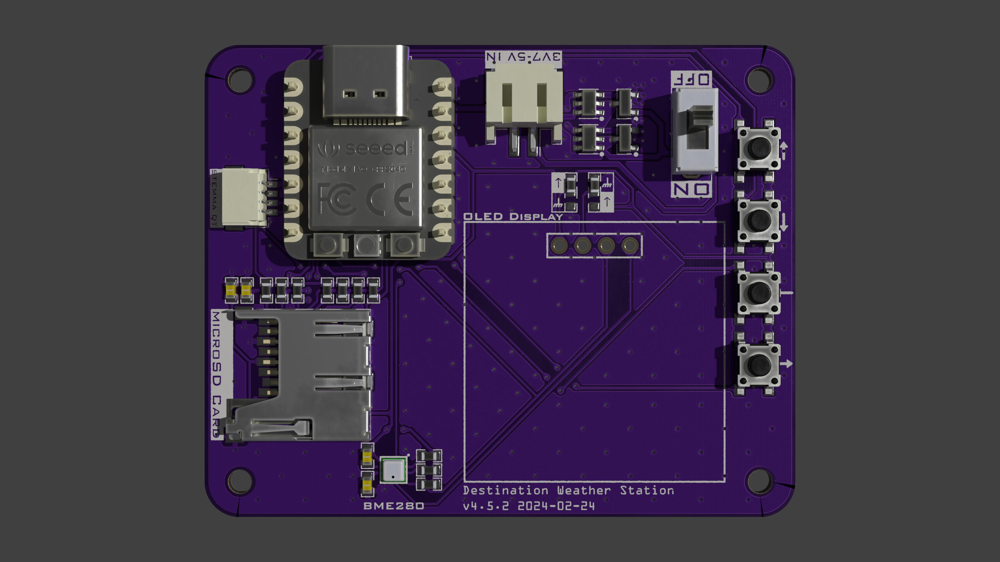
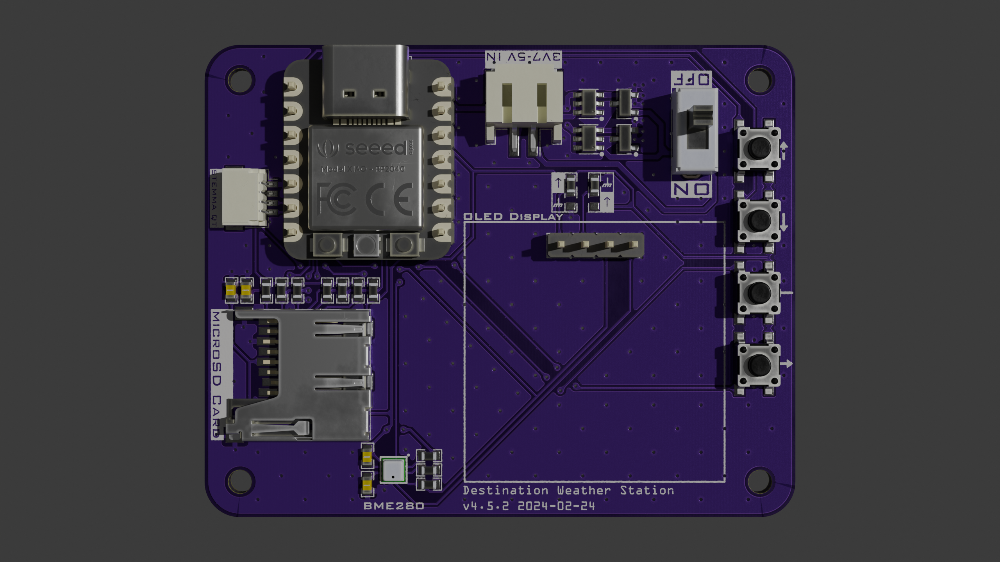

Destination Weather Station v4.5 Assembly
The Destination Weather Station v4.5 is preassembled with the majority of the circuit components.
Before using the weather station, you will need to solder the XIAO RP2040 microcontroller, OLED display, and power switch. Follow the instructions below to solder your weather station. You can then connect the batteries and insert the microSD card.
Soldering
To solder the weather station, follow the instructions below. Tools required to complete these steps are:
Soldering iron
Solder wire
Power Switch
To solder the power switch to the weather station, insert it into the front side of the board. Flip the board over and solder the pins, starting with the two outer ones.
XIAO RP2040
To solder the XIAO RP2040 to the weather station, begin by inserting the long side of the 1x7 header pins into the weather station board as shown below.
Next, flip the weather station over and solder all 14 pins to the weather station.
Finally, flip the weather station back over and solder the XIAO to the short side of the header pins. After you are done, it should look like the image below.
OLED Display
To solder the OLED display to the weather station, you will follow similar procedures to the steps above to solder the XIAO.
Begin by inserting the long side of the 1x4 header into the weather station board as shown below.
Next, flip the board over and solder the pins to the back.
Similarly, flip the board back over and solder the display to the front.

Final Assembly

Batteries
Insert three (3) AAA batteries into the battery pack. Connect the JST-PH connector to the matching connector on the weather station.